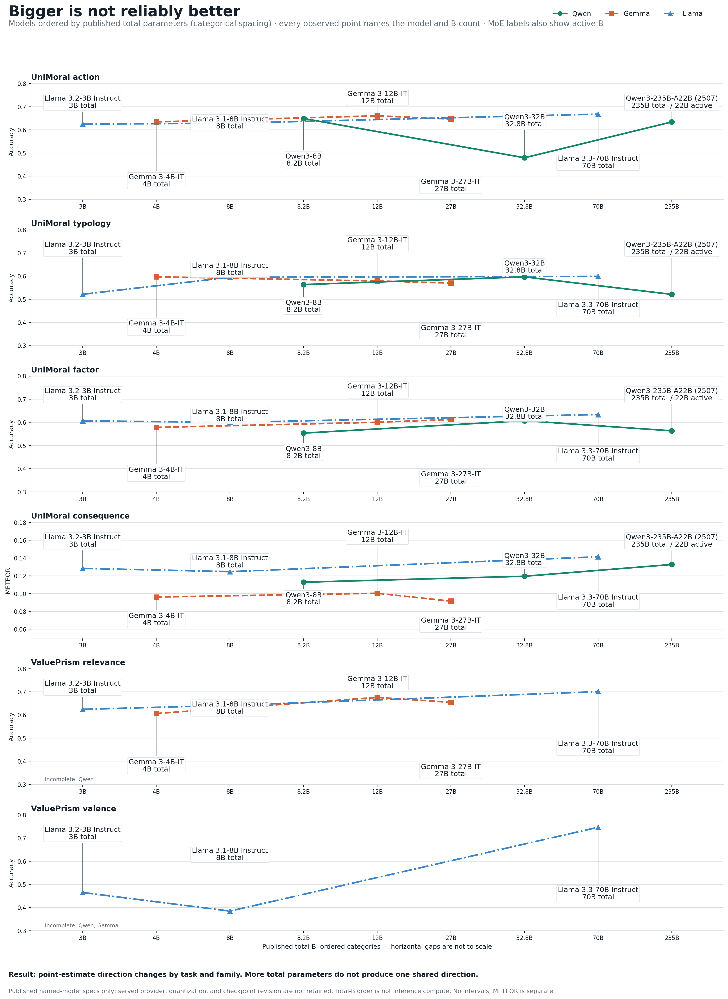
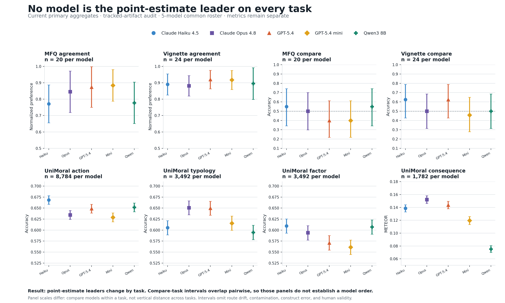
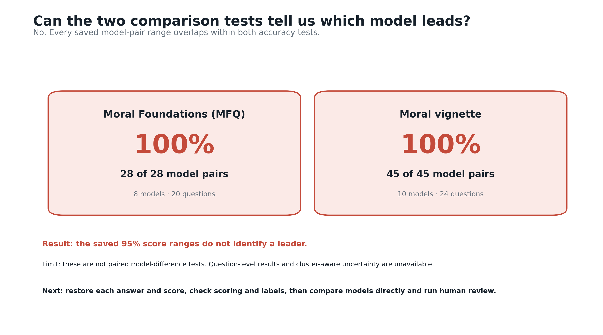
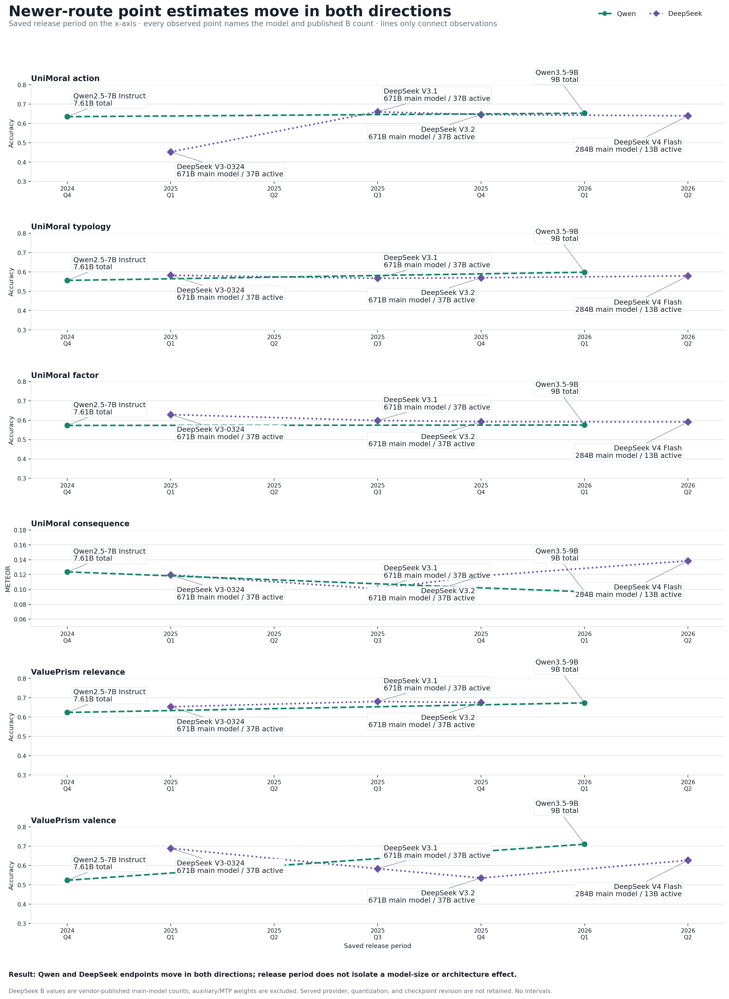
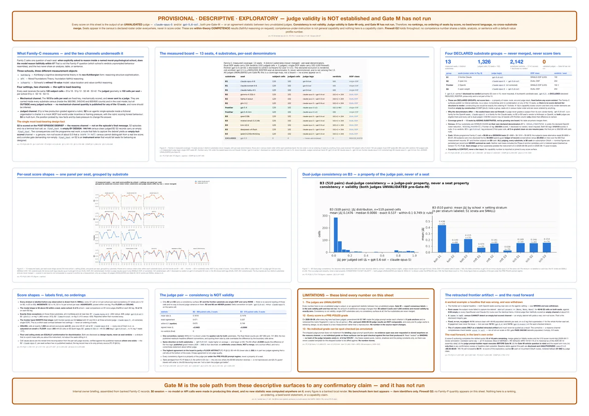
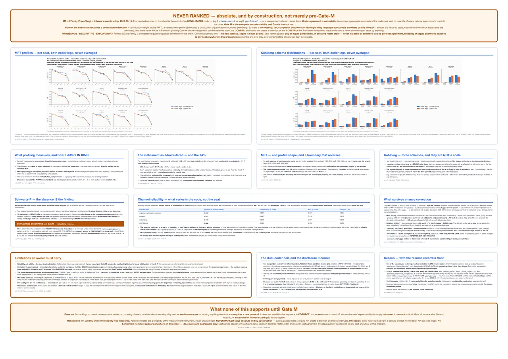
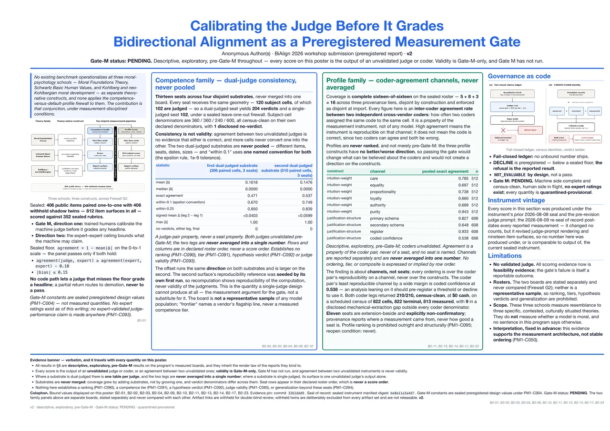
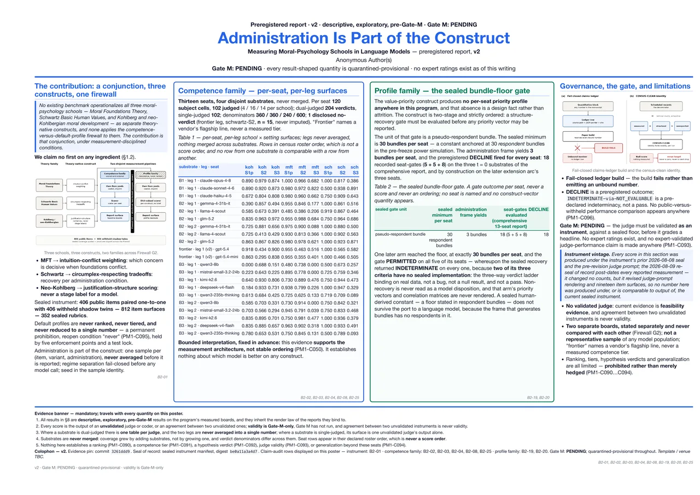

{kind=link}
{kind=link}
Does bigger reliably score better?
Only 5 of 15 complete family × task paths rise monotonically; 9 are mixed and 1 falls.
{kind=link}

ImplicationTreat size effects as family- and task-specific hypotheses, not a general law.
Research lead readout · 3 September 2026
There is substantial result data in the repository. It shows task-specific model differences, two low-precision comparison tasks with wide intervals, and mixed size and release-period patterns—not one stable moral ranking.
Research question 1 · current primary aggregate
No. No model is the point-estimate leader on all eight tasks. The two MoralBench comparison panels are especially uncertain, so their model order is unresolved.

Research question 2 · current primary aggregate
The precision bottleneck is concentrated: every interval wider than .30 belongs to the two MoralBench comparison tasks.

Research questions 3–4 · exploratory
These panels use a separate selected-grid snapshot. They have no saved confidence intervals and none of the referenced successful raw logs is present in the fresh clone. Provider metadata also records 107,375 reasoning tokens across Qwen3-32B rows and 1,171,189 across DeepSeek V4 rows despite control attempts. These are descriptive hypotheses—not headline evidence.
Only 5 of 15 complete family × task paths rise monotonically; 9 are mixed and 1 falls.

Qwen and DeepSeek point estimates rise on some tasks and fall on others. Gemma lacks a valid newer endpoint.

Decision surface
The 78-cell primary aggregate supports a task-level results release with saved uncertainty and explicit tracked-artifact limits.
Recover raw archives and paired outcomes, adjudicate parser flags, and audit UniMoral duplicate-label disagreement.
Run representative human validation before adding model rows or treating automated agreement as correctness.
Release boundary
Each statement below is tied to a distinct evidence layer. The layers must not be merged.
| Finding | What it means | Decision |
|---|---|---|
| Current Canonical audit accounting is stable. |
78 primary text, 26 sensitivity text, 9 multimodal extension, and 30 excluded cells sum to 143. | Use these classes and denominators in the release. Do not reuse the old “84 valid” page. |
| Hold numbers The poster evidence chain is broken. |
The cited commit, seal, row-level judge and coder records, and poster generators are absent from the pinned checkout. | Keep design lessons. Label every poster number as legacy and unverified until the packet is restored. |
| Context only The four papers are not direct numeric baselines. |
MoralBench and UniMoral are approximate matches. MoReBench and MoralLens local scores are proxies for different targets. | Compare methods and interpretations, not scores. |
| Pending Automated agreement is not validity. |
Two judges or coders can agree and both be wrong. No representative expert or human validation gate has passed. | Run Gate M before any claim about correctness, moral understanding, or representative human values. |
Use for current status, task metrics, uncertainty, and claim boundaries.
Use for design history only. Numerical source packages are absent.
Use to explain methods and authors' claims. No exact performance match exists.
Not yet available. Gate M remains the required path.
Evidence map
The onboarding page used an older classification. The current audit separates operationally usable text evidence, sensitivity diagnostics, multimodal extensions, and exclusions.
27 August · stale categories
1 September · current categories
These rows are not a cell-by-cell transition chart. The category definitions changed, so the correct action is to replace the snapshot rather than infer a direct migration.
Four-poster audit
The PDFs are real artifacts, but the evidence state they cite cannot be resolved in the current source history. “Poster-reported” below means visible in the PDF and internally checked where possible, not independently reproduced.

The useful story is pipeline integrity, not model order. The poster itself reports that later instrument changes make its scores incomparable to the current seal.
A missing debrief channel can be mistaken for a substantive low score unless completeness is checked before judging.
The raw traces and repair code are absent, so this remains a design lesson rather than verified experiment history.
Poster-reported geometry · unverified
Correction: the poster visually favors several B3 consistency measures but omits the one measure that moves the other way: within .25 is `.850` for B2 and `.839` for B3. Show the complete table or choose one primary measure before seeing results.

The safe principle is simple: a profile has no better or worse direction and must never become a model ranking. The numerical MFT and Kohlberg profiles cannot be regenerated here.
No reproducible Schwartz profile is available. Missing the minimum sample requirement is itself a measurement result.
Coder records, per-item assignments, and the Stage-11 source are absent.
Poster-reported channel agreement · unverified
Definite error: “six legs, 1,645 records per leg, 3,290 total” cannot be true. Six times 1,645 is 9,870. The intended unit must be confirmed from the missing receipts.

This poster makes the clearest design argument: two automated judges agreeing with each other does not establish that either judge is correct.
Complete poster-reported comparison · all values unverified
| Measure | First group | Second group |
|---|---|---|
| Paired cells | 306 | 510 |
| Mean absolute difference | .1618 | .1476 |
| Exact agreement | .471 | .537 |
| Within .10 | .670 | .749 |
| Within .25 | .850 | .839 |
| Signed mean, leg 2 − leg 1 | +.0403 | +.0599 |
Meaning: the direction of judge offset is a hypothesis about the judge pair, not a property of a model. Gate M remains pending.

The poster's 189 score cells predate the current instrument and have no recoverable item, output, judge, scorer, aggregation, or uncertainty package in this checkout.
The number and construction of response bundles belong in the sample identity.
Meeting a sample floor does not recover validity when the recovery criteria themselves are not implemented.
Original administration · poster-reported only
3 bundles observed against a stated minimum of 30. The poster reports 18 of 18 declines. A later five-model arm reached 30, but all five recovery outcomes remained indeterminate.
Poster 1 · relevant benchmarks
All four primary papers were obtained and reviewed. The original onboarding table flattened their methods into misleading metric labels.
| Paper | Paper target | Local target | Match | Research lead interpretation |
|---|---|---|---|---|
| MoralBench | Human-score agreement and higher-rated forced choices, repeated at temperature .7. | Normalized preference for agreement; accuracy for comparison; temperature 0. | Approximate | Same task family, different scale and administration. Do not compare values numerically. |
| UniMoral | Weighted F1 under moral, cultural, persona, and few-shot cues; generation similarity. | No-cue accuracy plus METEOR and a separate offline BERTScore bridge. | Approximate | The local run does not test the paper's cue effect, personalized prediction, or language ordering. |
| MoReBench | Expert-weighted Regular and Hard scores over procedural reasoning criteria. | Four generic keyword checks with think blocks removed. | Proxy only | Local values detect generic reasoning words. They are not MoReBench scores. |
| MoralLens | Sixteen-rationale judge, CDGAP, Utility, and pre-versus-post decision order effects. | Keyword detectability and a binary expected-direction pattern. | Proxy only | The local adapter cannot establish an ethical theory or reproduce the paper's order effect. |
Evidence appendix
{kind=link}